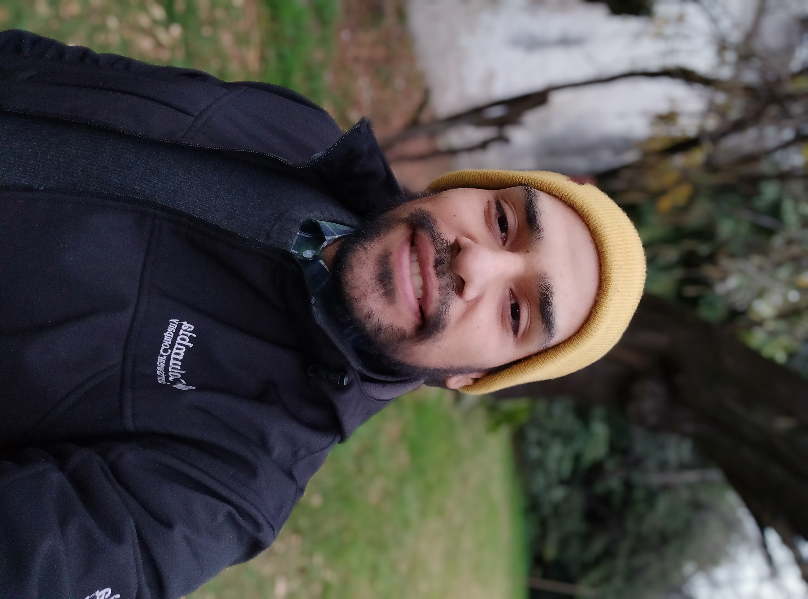

<div class="container">
    <div class="row">
        <section>
            <div class=" col-12 col-xs-12 col-sm-12 col-md-5 col-lg-4 col-xl-4">
                <div class="foto">
                    
                </div>
            </div>

            <div class="info col-12 col-xs-12 col-sm-12 col-md-7 col-lg-8 col-xl-8">
                <div class="relleno">
                    <div class="cuadradito"></div>
                    <div class="cuadradito"></div>
                    <div class="cuadradito"></div>
                    <div class="cuadradito"></div>
                </div>
                <div class="acerca">
                    <h2 >Acerca de mi:</h2>
                    <p><strong>Julian Manrique</strong> es estudiante para desarrollador web full stack, con mayor orientacion hacia el backend. 
                        Recibido en la universidad de 3 de febrero
                        y productor audiovisual en sus momentos libres. Actualmente vive
                    en Buenos Aires, Argentina.</p>
                </div>
            </div>
        </section>  
    </div>

</div>